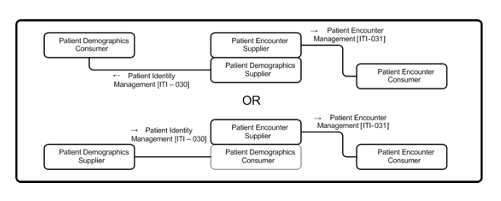

14 Patient Administration Management (PAM)
14.1 Patient Administration Management Use Cases
The Patient Administration Management Integration Profile defines transactions based on message exchanges to support patient identity and encounter information, as well as movements within an acute care encounter. These can be represented by the following use cases.
14.2 Patient Identity Management Use Case
A Patient Registration application decides to create a new patient John Smith, based on patient information input from Hospital Sun. At this time, however, there is a limited set of personal information traits of John Smith available. His date of birth, home address, and home phone number are unknown. The registration application creates the patient identity and sends a Patient Creation message to its downstream applications with the set of known personal information traits.
The next day, detailed personal information about John Smith becomes available. The registration application updates its patient identity record, and sends out a Patient Update message.
After a week, the registration application creates a temporary patient identity John Doe based on input from Imaging Center Moon. After reconciliation of the temporary patient, it updates John Doe’s demographics to (a new instance of) John Smith, and changes the temporary Patient Identifier originally assigned to a permanent identifier.
After human inspection, it turns out that these two identities of John Smith represent the same person. The operator decides to merge the second identity to the previously established identity John Smith. A Patient Merge is communicated downstream.
14.2.1 Patient Encounter Management Use Case
Patient Alan Alpha arrives for an annual exam at a clinic. The registration system sends the patient registration information to the local ancillary systems, and the affiliated hospital's ADT system.
The exam of Alan Alpha reveals a serious condition, and an immediate hospital admission is recommended. Alan Alpha is referred to the affiliated hospital for admission. He is pre-admitted in the hospital for relevant diagnostic tests. The tests confirm the condition, and the patient is admitted in the hospital's ICU. During the stay in the ICU, the patient's insurance is verified, and the updated information is sent from the hospital’s ADT system to the hospital’s ancillary systems.
After a day in the ICU, Alan Alpha’s condition has improved, and he is transferred to a regular bed. The nurse recording the transfer makes a mistake, and enters the wrong room and bed. After discovering the error, the transfer is canceled, and the correct transfer is recorded. The patient is now recovered and about to leave the hospital. According to the hospital's procedures, he is transferred to an outpatient unit for administering follow-up tests. The patient is registered in the Hospital Outpatient Registration System.
The outpatient encounter of Alan Alpha is completed; based on satisfactory test results, he is discharged from the hospital and the Outpatient Registration system.
In this use case, two patient encounter management systems (the hospital ADT system and the hospital Outpatient Registration system) cooperate as peers.
14.2.2 PAM Actors/Transactions
This section defines the actors, transactions, and/or content modules in this profile. General definitions of actors are given in the Technical Frameworks General Introduction Appendix A at http://ihe.net/TF_Intro_Appendices .
Figure 14.2.2-1 shows the actors directly involved in the Patient Administration Management Integration Profile and the relevant transactions between them. Other actors that may be indirectly involved because of their participation in other IHE Integration Profiles, such as Radiology Scheduled Workflow, Patient Identity Cross-Referencing Integration Profiles, etc., are not shown.
Figure 14.2.2-1: Patient Administration Management Actor Diagram
Table 14.2.2-1 lists the transactions for each actor directly involved in the Patient Management Integration Profile. In order to claim support of this integration profile, an implementation must perform the required transactions (labeled “R”). A complete list of options defined by this Integration Profile that implementations may choose to support is listed in Table 14.3-1.
Table 14.2.2-1: Patient Administration Management - Actors and Transactions
| Actors | Transactions | Optionality | Section |
| Patient Demographics Supplier | Patient Identity Management [ITI-30] | R | ITI TF-2: 3.30 |
| Patient Demographics Consumer | Patient Identity Management [ITI-30] | R | ITI TF-2: 3.30 |
| Patient Encounter Supplier | Patient Encounter Management [ITI-31] | R | ITI TF-2: 3.31 |
| Patient Encounter Consumer | Patient Encounter Management [ITI-31] | R | ITI TF-2: 3.31 |
14.2.2.1 Actor Descriptions and Actor Profile Requirements
Most requirements are documented in Transactions (Volume 2) and Content Modules (Volume 3). This section documents any additional requirements on profile’s actors.
14.2.2.1.1 Patient Demographics Supplier
The Patient Demographics Supplier shall support at least one of the Merge Option or the Link/Unlink Option. These options define additional messages that shall be supported by these actors. See Section 14.3.
14.2.2.1.2 Patient Demographics Consumer
The Patient Demographics Consumer shall support at least one of the Merge Option or the Link/Unlink Option. These options define additional messages that shall be supported by these actors. See Section 14.3.
14.2.2.1.3 Patient Encounter Supplier
The Patient Encounter Supplier shall support the Basic Subset of messages defined in ITI TF-2: 3.31.5.1 .
14.2.2.1.4 Patient Encounter Consumer
The Patient Encounter Consumer shall support the Basic Subset of messages defined in ITI TF-2: 3.31.5.1 .
14.3 PAM Actor Options
Options that may be selected for this Integration Profile are listed in Table 14.3-1 along with the Actors to which they apply. Dependencies between options when applicable are specified in notes.
Table 14.3-1: Patient Administration Management - Actors and Options
| Actor | Options | Vol. & Section |
| Patient Demographics Supplier | Merge (Note 1) | ITI TF-2: 3.304.1 |
| Link / Unlink (Note 1) | ITI TF-2: 3.30.4.2 | |
| Acknowledgement Support | ITI TF-2: 3.30.4.4 | |
| Ambulatory Patient Data | ITI TF-2: 3.30.4.5 | |
| Patient Demographics Consumer | Merge (Note 1) | ITI TF-2: 3.30.4.1 |
| Link / Unlink (Note 1) | ITI TF-2: 3.30.4.2 | |
| Acknowledgement Support | ITI TF-2: 3.30.4.4 | |
| Patient Encounter Supplier | Inpatient / Outpatient Encounter Management | ITI TF-2: 3.31.5.2 |
| Pending Event Management (Note 2) | ITI TF-2: 3.31.5.3 | |
| Advanced Encounter Management | ITI TF-2: 3.31.5.4 | |
| Temporary Patient Transfer Tracking | ITI TF-2: 3.31.5.5 | |
| Historic Movement | ITI TF-2: 3.31.5.6 | |
| Acknowledgement Support | ITI TF-2: 3.31.5.7 | |
| Maintain Demographics | ||
| Ambulatory Patient Data | ITI TF-2: 3.31.5.8 | |
| Patient Encounter Consumer | Inpatient / Outpatient Encounter Management | ITI TF-2: 3.31.5.2 |
| Pending Event Management (Note 2) | ITI TF-2: 3.31.5.3 | |
| Advanced Encounter Management | ITI TF-2: 3.31.5.4 | |
| Temporary Patient Transfer Tracking | ITI TF-2: 3.31.5.5 | |
| Historic Movement | ITI TF-2: 3.31.5.6 | |
| Acknowledgement Support | ITI TF-2: 3.31.5.7 | |
| Maintain Demographics |
Note 1: An IHE National Extension shall select at least one of the Merge and Link / Unlink Options, and shall mandate the same option for both the Patient Demographics Supplier and the Patient Demographics Consumer implementations in its realm to ensure interoperability.
Note 2: The Pending Event Management Option depends on the Inpatient / Outpatient Encounter Management Option. An implementation supporting the Pending Event Management Option must also support the Inpatient / Outpatient Encounter Management Option.
The PAM Profile offers a large number of options to support the exchange of patient demographic and encounter data in a wide variety of environments. Particularly, this profile addresses both acute care settings and ambulatory healthcare organizations. It is unlikely that one particular environment will need all the options.
On one hand, an ambulatory care community might need only the pair of actors Patient Demographics Supplier/Patient Demographics Consumer, using transaction [ITI-30]. On the other hand, the exchange of patient demographic and encounter data between a hospital patient administration system and its ancillary systems (laboratory, radiology, cardiology, etc.) might be fully satisfied, for example, with the pair of actors Patient Encounter Supplier/Patient Encounter Consumer, using transaction [ITI-31] with the Basic Subset of messages and the two options “Inpatient/Outpatient Encounter Management” and “Maintain Demographics.”
Hence, the first decision that must be made by a healthcare organization for the deployment of this profile is to select the proper actors and the appropriate set of options to cover its needs, ensuring that each selected option will be supported by the actors on both ends of the transactions.
Furthermore, as an IT Infrastructure profile, the PAM Profile may not be used standalone. Rather, its actors and transactions will be leveraged by other domain integration profiles (in radiology, cardiology, laboratory, or in cross enterprise document sharing). Here again, the first decision that will be taken by the IHE committee that wishes to leverage PAM for its domain, will be to select the proper set of options and to ascertain the consistent use of these options in its domain.
Thus, during the building process of IHE domain technical frameworks, as well as in the deployment process, the PAM Profile will be constrained to reduce its original number of options.
However, to accommodate situations in which a consumer application would not support an option implemented by a supplier application, the PAM Profile requires that the consumer application shall application-reject a message that it does not support (see ITI TF-2: C.2.3).
14.3.1 Merge Option
The Merge Option defines the information exchange needed to manage the merging of patient identifiers.
14.3.2 Link / Unlink Option
The Link / Unlink Option defines the information exchanges needed to manage the linking and unlinking of patient identifiers, respectively.
14.3.3 Inpatient / Outpatient Encounter Management Option
The Inpatient / Outpatient Encounter Management Option extends the basic patient encounter management functions by defining the information exchanges needed for pre-admitting a patient and for transferring a patient from one location to another location in the enterprise, as well as for changing patient class.
14.3.4 Pending Event Management Option
The Pending Event Management Option extends the basic patient encounter management functions by defining the information exchanges needed for supporting pending events, e.g., admission, transfer, and discharge.
14.3.5 Advanced Encounter Management Option
The Advanced Encounter Management Option extends the basic patient encounter management functions by defining a set of messages for handling patient temporary absence, changing attending doctor in an encounter, and moving accounts among different patient identities.
14.3.6 Temporary Patient Transfer Tracking Option
The Temporary Patient Transfer Tracking Option defines the information exchange needed for tracking a temporary leave / return of a patient from / to a care facility.
14.3.7 Historic Movement Option
The Historic Movement Option extends the basic patient encounter management functions, as well as the following Options:
- Inpatient / Outpatient Encounter Management
- Pending Event Management
- Advanced Encounter Management Options
The Historic Movement Option provides a means to uniquely identify any movement event conveyed in the underlying information exchange. This enables updates of such events at any later time point after they were initially reported.
14.3.8 Acknowledgement Support Option
An actor that claims support for the Acknowledgement Support Option shall be capable of using the enhanced acknowledgement mode as defined in the HL7 v2.x standard.
14.3.9 Maintain Demographics Option
The Maintain Demographics Option extends patient encounter management functions by defining a set of messages for merging patient identifiers and updating patient information in the context of a particular encounter, using transaction [ITI-31].
14.3.10 Ambulatory Patient Data Option
If the Patient Demographics Supplier supports the Ambulatory Patient Data Option, it shall be capable of providing the patient address.
If the Patient Encounter Supplier supports the Ambulatory Patient Data Option, it shall be capable of providing the patient address, the patient ambulatory status and the referring doctor.
See ITI TF-2: 3.30.4.5 and ITI TF-2: 3.31.5.8 .
14.4 Patient Administration Management Profile Actor Grouping
An actor from this profile (Column 1) shall implement all of the required transactions and/or content modules in this profile in addition to all of the requirements for the grouped actor (Column 2).
Section 14.4.2 describes some optional groupings in other related profiles.
Table 14.2.3-1: PAM - Required Actor Groupings
| PAM Actor | Actor(s) to be grouped with | Reference |
| Patient Demographics Supplier | None | -- |
| Patient Demographics Consumer | None | -- |
|
Patient Encounter Supplier
|
PAM / Patient Demographics Consumer | Section 14.4.1 |
| PAM / Patient Demographics Supplier | ||
| Patient Encounter Consumer | None | -- |
14.4.1 Actor Grouping of Patient Encounter Supplier
In order to obtain patient identity and demographics information to serve its patient encounter message functions in transaction [ITI-31], a Patient Encounter Supplier is required to be grouped with either a Patient Demographics Supplier or a Patient Demographics Consumer, as shown in Figure 14.4.1-1.

Figure 14.4.1-1: Patient Encounter Supplier Grouping Requirements
On the other hand, transaction [ITI-31] is self-contained in a sense that the Patient Encounter Supplier sends both patient encounter information and patient identity and demographics information (in the context of the encounter data) to the Patient Encounter Consumer. In addition, transaction [ITI-31] also allows the Patient Encounter Supplier to send messages to the Patient Encounter Consumer for patient identity maintenance in the encounter context, including patient update and identity merge. There is no required grouping for the Patient Encounter Consumer.
14.4.2 Actor Grouping with other IHE Actors
The PAM Profile provides an infrastructure in a healthcare enterprise or across a number of enterprises to distribute the patient identity, demographics, and encounter information, in order to enable various clinical functions in clinical settings. The PAM actors can be grouped with actors in other IHE Integration Profiles.
One possible grouping is between the Patient Demographics Supplier in the PDQ Profile and either the Patient Demographics Supplier or the Patient Demographics Consumer in this profile, to add query support defined in the Patient Demographics Query transaction to the same set of patient information managed in the PAM Profile.
Furthermore, the Patient Demographics Supplier in the PDQ Profile can be grouped with the Patient Encounter Supplier of this profile. Due to the required grouping of the Patient Encounter Supplier (see Section 14.4.1), such a grouping can provide query support defined in both the Patient Demographics Query and Patient Demographics and Visit Query transactions to the same set of patient and encounter information that is managed in the PAM Profile.
These are some examples of possible grouping of the PAM actors with other IHE actors. Many other possibilities may be useful (either to provide additional values or to allow profile structure simplification). For example, in the radiology scheduled workflow (SWF) Profile, the Order Placer and Order Filler Actors can be grouped with the Patient Encounter Consumer Actor.
14.5 Patient Administration Management Process Flow
14.5.1 Patient Identity Management
The Patient Identity Management incorporates the following process flows. This refines the use case shown in ITI TF-1: 14.1.1.
14.5.1.1 Patient Identity Creation and Maintenance
- Create Patient. The Patient Demographics Supplier decides to create a new patient John Smith, based on patient information input from Hospital Sun. At this time, however, there is a limited set of personal information traits of John Smith available. His date of birth, home address, and home phone number, e.g., are unknown. The Patient Demographics Supplier creates the patient identity and sends a Patient Creation message to the Patient Demographics Consumer with the set of known personal information traits.
- Update Patient Demographics. The next day, detailed personal information about John Smith becomes available. The Patient Demographics Supplier updates its patient identity record, and sends out a Patient Update message, including date of birth, home address and home phone number.
- Create Temporary Patient. After a week, the Patient Demographics Supplier creates a temporary patient identity John Doe based on input from Imaging Center Moon.
- Update Patient Demographics and Change Patient Identifiers After reconciliation of the temporary patient, the Patient Demographics Supplier updates John Doe’s demographics to (a new instance of) John Smith, and changes the temporary Patient Identifier originally assigned to a permanent identifier
- Merge Patient Identifiers. After human inspection, it turns out that the two patients named John Smith in the Patient Demographics Supplier actually represent the same real-world patient. The operator decides to merge the two patient identities. The Patient Demographics Supplier sends a Patient Merge message to the Patient Demographics Consumer.
The following diagram shows the process flow:
Figure 14.5.1.1-1: Patient Identity Management Process Flow in PAM Profile
14.5.1.2 Alternative Process Flow
- Link Patient Identifiers. A similar situation as that mentioned above, except that the local procedures request the Patient Demographics Supplier to link these two duplicated patient records instead of merging them. The operator performs the link function. The Patient Demographics Supplier sends a Patient Identifiers Link message to the Patient Demographics Consumer.
The following diagram shows the alternate portion of the process flow:
Figure 14.5.1.2-1: Patient Identity Management Alternate Process Flow in PAM Profile
14.5.2 Patient Encounter Management
The Patient Encounter Management incorporates the following process flows:
14.5.2.1 Inpatient/Outpatient Encounter, Maintain Demographics, and Pending Event Management
In this section, inpatient/outpatient encounter management process flow is described in an environment that involves a number of instances of Patient Encounter Supplier and Patient Encounter Consumer. This refines the use case shown in Section 14.1.2
In some institutions, there may be one central Patient Encounter Supplier, while others may have multiple Patient Encounter Suppliers serving patient encounter management functions in different clinical settings (e.g., hospital inpatient, hospital outpatient, clinics). It is the responsibility of a healthcare institution to define the actor roles of its systems, as well as to configure the relationship of a Patient Encounter Supplier and its Patient Encounter Consumers, to satisfy their business process models.
As shown in Figure 14.5.2.1-1, in the healthcare institution of this process flow, there are three Patient Encounter Suppliers, each of which serves a number of Patient Encounter Consumers in a specific clinical setting of the institution.
Figure 14.5.2.1-1: System and PAM Actor Role Configuration
The systems involved in this process flow implement the following PAM roles:
- Clinic Registration System as Patient Encounter Supplier
- Clinic Ancillary System as Patient Encounter Consumer
- Hospital ADT system as both Patient Encounter Supplier and Patient Encounter Consumer
- Hospital Ancillary system as Patient Encounter Consumer
- Hospital Outpatient Registration System as both Patient Encounter Supplier and Patient Encounter Consumer
Note that the Hospital ADT and Outpatient Registration Systems play both the roles of Patient Encounter Supplier and Patient Encounter Consumer, and cooperate as peers. The relationship between the Patient Encounter Supplier and Patient Encounter Consumer in the same system is dependent on the clinical application logic implemented in the institution, and the definition of this relationship is beyond the scope of the PAM Integration Profile.
The process flow in Figure 14.5.2.1-2 is described in the following:
- Patient Registration : A patient arrives for an annual exam at a clinic. The patient record has been created previously by a Patient Demographics Supplier, and exists in the clinic’s registration system through its grouping with the Patient Demographics Supplier Actor. The clinic’s registration system sends the Patient Registration message to the local ancillary systems, and the affiliated hospital’s ADT system.
- Change Outpatient to Inpatient : The exam reveals a serious condition of the patient, and an immediate hospital admission is recommended. The patient is referred to the affiliated hospital for admission. A Change Outpatient to Inpatient message is sent to the hospital’s ADT System.
- Pre-admit Patient for Hospitalization : The patient is pre-admitted in the hospital for relevant diagnostic tests. The hospital ADT system sends Patient Pre-Admit message to the Hospital Ancillary System.
- Patient Admitted Notification : The tests confirm the condition, and the patient is admitted to the hospital’s ICU. The hospital ADT system sends an Admission Notification message to the Ancillary System.
- Patient Insurance Information Update : During the stay in the ICU, the patient’s insurance is verified, and the updated information is sent from the hospital ADT to the Hospital Ancillary System.
- Patient Location Transfer : After a day in the ICU, the patient’s condition has improved, and the patient is transferred to a regular bed. The hospital ADT system sends a Patient Transfer message to the Hospital Ancillary System.
- Patient Location Transfer Error Reconciliation : The nurse recording the transfer makes a mistake, and enters the wrong room and bed. After discovering the error, the hospital ADT system sends a Cancel Patient Transfer message to the Hospital Ancillary System, followed by a new Patient Transfer message.
- Patient Pending Discharge : The patient is now recovered and about to leave the hospital. The ADT system sends a Patient Pending Discharge message to the Hospital Ancillary System.
- Change Inpatient to Outpatient : According to the hospital’s procedures, the patient is transferred to an outpatient unit for administration of follow-up tests. The ADT system sends a Change Inpatient to Outpatient message to the Hospital Outpatient Registration System.
- Register Patient as Outpatient : The patient is registered in the Hospital Outpatient Registration System, which sends a Patient Registration message to the Hospital ADT system and the Hospital Ancillary System.
- Patient Discharged from Outpatient System : The outpatient encounter is completed. A Patient Discharge message is sent to the Hospital ADT System and to the Hospital Ancillary System.
- Patient discharged from Hospital ADT System : Based on satisfactory test results, the patient is discharged. The hospital ADT system sends a Patient Discharge message to the Hospital Ancillary System.
The following diagram shows the process flows of the discussed use cases:
Figure 14.5.2.1-2: Inpatient / Outpatient Encounter Management Process Flow in PAM Profile
14.5.2.2 Advanced Encounter Management
- Attending Physician Change : A patient’s attending physician changes during an inpatient stay. The Patient Encounter Supplier sends a notification message that contains the name of the new attending doctor to the Patient Encounter Consumer.
- Cancellation of Attending Physician Change : A notification of change of a patient’s attending physician was sent in error. The Patient Encounter Supplier sends a cancellation message that contains the name of the old attending doctor to the Patient Encounter Consumer.
- Leave of Absence : An inpatient is authorized a weekend leave of absence from the medical center. The Patient Encounter Supplier sends a notification message to the Patient Encounter Consumer that contains the date and time of the leave of absence and of the expected return.
- Cancellation of Leave of Absence : A notification that an inpatient was authorized a weekend leave of absence was sent in error. The Patient Encounter Supplier sends a cancellation message to the Patient Encounter Consumer.
- Return from Leave of Absence : An inpatient returns to the medical center from a weekend leave of absence. The Patient Encounter Supplier sends a notification message to the Patient Encounter Consumer that contains the date and time of the expected return and of the actual return.
- Cancellation of Return from Leave of Absence : A notification that an inpatient returned from a weekend leave of absence was sent in error. The Patient Encounter Supplier sends a cancellation message to the Patient Encounter Consumer.
- Move Account : The Patient Encounter Supplier sends a message that incorrectly associates Account 12345 with Patient A; in fact, Account 12345 should be associated with Patient B. To affect a correction, the Patient Encounter Supplier sends a message to the Patient Encounter Consumer that contains the account identifier and the identifiers of the patient records between which the account association is to be moved.
The following figure shows these discussed use cases:
Figure 14.5.2.2-1: Advanced Encounter Management Process Flow in PAM Profile
14.5.2.3 Historic Movement Management
Historic tracking of patient admissions, discharges, and other movements may be needed in some healthcare institutions. Such historic events may need to be tracked even beyond the boundary of an episode of care. In order to facilitate this tracking, the Patient Encounter Supplier may send the messages in Sections 14.5.2.1 and 14.5.2.2 to the Patient Encounter Consumer, with the addition of an identifier for the particular encounter with which the patient admission, discharge, or movement is associated.
- Patient Location Transfer : A patient is transferred to bed 23 of Room B after a few days of stay in ICU. The hospital ADT system sends a Patient Transfer message (including the elements provided in the Historic Movement Management Option) to the downstream applications.
- Update Previous Transfer Event . After two days, the operator of the ADT system detects that the transfer destination and time in the previously sent Patient Transfer message were wrong. He corrects the errors and an Update Historic Patient Transfer message is sent out, to communicate the true room / bed information and the true transfer time.
The following figure shows these use cases:
Figure 14.5.2.3-1: Historic Movement Management Process Flow in PAM Profile
14.5.2.4 Temporary Patient Transfer Tracking
- Departure to Temporary Location : A chest X-ray is scheduled for an inpatient. To perform this service, the patient needs to be moved from her inpatient bed in the medical service to the Radiology department. When the patient departs from her inpatient bed, the Patient Encounter Supplier sends a notification message to the Patient Encounter Consumer that contains the temporary location to which the patient is being moved.
- Arrival at Temporary Location : When the patient arrives at the Radiology department, the Patient Encounter Supplier sends a notification message to the Patient Encounter Consumer that contains the temporary location to which the patient has been moved.
- Cancellation of Departure to Temporary Location : It is incorrectly communicated that a patient left her inpatient bed to move to the Cardiology department for treatment. The Patient Encounter Supplier sends a cancellation message to the Patient Encounter Consumer that contains the patient’s location(s) (permanent and / or temporary) prior to the time of the erroneously communicated departure.
- Cancellation of Arrival at Temporary Location : It is incorrectly communicated that a patient, having left her inpatient bed, arrived in the Surgery department for treatment. The Patient Encounter Supplier sends a cancellation message to the Patient Encounter Consumer that contains the patient’s location(s) (permanent and / or temporary) prior to the time of the erroneously communicated arrival.
The following figure shows these discussed use cases:
Figure 14.5.2.4-1: Temporary Patient Transfer Tracking Process Flow in PAM Profile